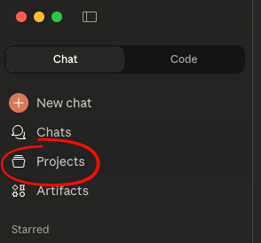

The Clinical Friend With Infinite Time
Even the best doctor on the planet with 15 minutes a year to get to know a patient is going to struggle to beat an average doctor talking to their patient daily.
Similarly, your clinical friend can often offer very good advice with very little information because they know you so well.
They can not only help you figure out what might be wrong, they can help you prep for the doctor because they know how you think and what you care about.
Claude gives everyone a clinical friend.*
Most of healthcare is just a conversation
A lot of healthcare is just talking. Your PCP learns most of what they need to know by just asking you. Your symptoms, family history, how much you exercise—it's all just what you tell them.
Even when there are official records, they're often noisy or confusing, so many clinicians just start from nearly scratch.
This is why having Claude act as a good clinical friend isn't all that hard. You don't need to pull in every bit of data, just that first conversation.
Diagnosis is also a conversation. Most clinicians only have minutes to ask you a few questions to figure out what you think is wrong, what isn't wrong, what is left to test and try.
But if you could answer all those questions before you walked in the door, they could ask more, different, and better questions. AI lets you have a lot of the conversation ahead of time.
Start your conversation now, then take your time
Claude has as much time and attention for your health as you do.
Claude won't get bored hearing about the daily nuances and flourishes of your knee pain. It doesn't get exhausted by your anxiety. It will answer every question, even the same one, over and over.
You can talk to it for an hour today, ten minutes tomorrow, every day for a month. You can send it pictures. You can share your visit notes. You can pick up a conversation from six months ago.
Even your best clinical friend can't do that!
How to get the most out of AI for your health

This isn't complicated. Five steps:
1. Create a Health Project
Call it "Health" or whatever you want. Projects give Claude persistent context—files, memory, custom instructions that carry across conversations.
2. Add Context, Give Instructions
If you have medical records, upload them. If you don't, don't worry about it. Just upload whatever you have. Imperfect is fine. You can blend official and unofficial. It's your health from your perspective.
Instructions set the stage. If you don't wanna mess with this, download the skill. But it's not too bad, you can just copy and paste this:
Help me manage my health. I've uploaded the information and records I have to this project's files and any conversation I've had with you about my health is in here. Help me assess any clinical issue the way a talented, caring, friend would who also happens to be an s-tier doctor in all the relevant fields. Just as a good friend can't diagnose, but could offer a lot of good advice, ask the right questions, and help make good decisions, so too should you.
Help me understand my symptoms, think through the most likely scenarios, identify red flags, and all that. When it's time for a visit, help me prepare before and, after, help me make sense of what was discussed.This is a starting point. Remember, Claude wants to help, so let it know your weaknesses. Anxious about health? Likely to panic? Tell Claude. Stubborn? Unlikely to report symptoms, even to an AI, until they're really bad? Tell Claude. Overwhelmed by clinical jargon and afraid of getting it wrong? You know what to do.
3. Do a Health History
Start a conversation and ask Claude to interview you as their one and only patient. Something like:
Hi! Lets start our health journey together. Please interview me the way the best concierge doctor on the planet would interview their one and only billionaire client. Medical history, family history, medications, but also: how do you approach health? Do you tend to ignore things or worry about everything? What's your experience with the healthcare system been like? Goals, interests, all of it. You should know me so well that when I share a symptom, you can guess how I'm feeling and who and what in my life was affected and how.This is often more useful than health records!
4. New Conversation for Each Issue
Keep things organized. A new thread for each concern.
For chronic stuff or recurring issues, use your judgment—maybe one thread per flare-up, maybe one ongoing thread. You'll figure out what works.
Use it more than you think you should. Way more. Every little question. Give it too much detail. Share random updates. Anytime you're noticing something about your health—how you feel, if something is better or worse, what you're worried about—the AI should know.
5. Use Before, During, and After Care
This is where all that detail pays off. Before a visit ask the AI to help you prep: clarify your concerns, anticipate questions, prepare what to say. During: take notes or just do voice transcription. After: drop in the visit summary, update on what you learned, adjust the plan.
The meta-rule: Start earlier, ask more, talk longer, check in more often. AI doesn't get bored, tired, or annoyed. Start threads when issues are minor, trivial, embarrassing. If they resolve, they resolve. If they don't, you've been building context the whole time.
Use a skill to make this easier
The world of medicine and healthcare is confusing. Claude and most AI are great clinical friends out of the box. This skill just helps nudge the AI and lets it know about the structure above. If you're starting cold, this will help you get up and running.
Download the Skill
Works with Claude Desktop and Claude.ai. Under 2KB.
Download health-assistant.zipIs This For Me?
Using Claude, or any AI, for your health requires you to be an active participant. You need to be willing to think, not just be told what to do. If you want someone to hold your hand and make every decision for you, this isn't it.
You also need basic judgment. If you can't confidently figure out when to call 911 versus when to book an appointment, this isn't for you. That's not an insult—some people genuinely need more hand-holding, and that's what the traditional healthcare system is for.
But if you're the kind of person who's already asking AI health questions, already trying to figure things out on your own—you're doing it anyway. This just helps you do it better.
Help make this better
If this helps or you think it can be improved—either the skill or this page—let me know: kmunkitt@gmail.com
-
I'm not affiliated with Anthropic or any other lab. I just think Claude is the best model to use and generally trust Anthropic more than everyone else for a variety of reasons. I can't tell you what to do, but if you're taking some of my advice, might as well take most of it.